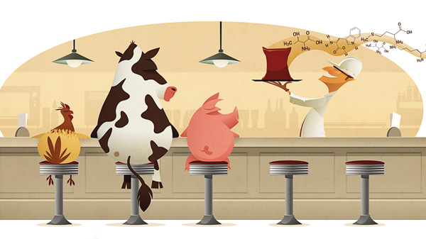

Conceito de nutrição animal
O termo nutrição animal é definido pelo conjunto de processos em que um organismo vivo digere ou assimila os nutrientes contidos nos alimentos ingeridos, usando-os para seu crescimento, manutenção, reparação dos tecidos corporais e produção.
Em animais domésticos, destinados a produção, a nutrição animal será a responsável por contribuir com a elaboração de produtos (produção de leite pela vaca, produção de ovos pelas galinhas ou deposição de gordura pelos animais de corte).
O valor de toda substância considerada alimento é baseado em seu teor de nutrientes, daí a importância da nutrição. Todo nutriente é definido como constituinte, ou grupo de constituintes dos alimentos, de igual composição química geral.
Considerando esta ciência, a base da nutrição animal procura considerar primeiramente os nutrientes e depois os alimentos. Assim os técnicos da nutrição animal (zootecnistas, veterinários e agrônomos) precisam pensar essencialmente nos nutrientes para depois pensar nos alimentos que os integram.
Necessidades metabólicas dos animais de produção
Usualmente, na nutrição animal, o entendimento das necessidades metabólicas da categoria animal é parte fundamental. Essas necessidades irão variar conforme muitas variáveis, tais como:
- Categoria animal;
- Raça;
- Tamanho;
- Capacidade produtiva;
- Capacidade reprodutiva;
- Nível de produção
- Estagio de crescimento
- Ambiente
Nutrientes balanceados serão fundamentais para que o animal cresça e se desenvolva no máximo da sua capacidade genética e ambiental.
Geralmente, proteínas e macrominerais são importantes neste processo de crescimento, pois fazem parte da estrutura do corpo. Porém, tanto a energia quanto outros nutrientes também são importantes para construir a estrutura do animal.
Devemos entender também que o processo de crescimento se torna bastante crítico quando o animal é destinado a desempenhar outra função de forma conjunta, como trabalho ou lactação. Assim, o crescimento será sacrificado em benefício dessas funções.
Daí a importância de conhecer o escore de condição corporal dos animais para que tenham melhores porcentagens de sucesso reprodutivo. O escore por sua vez, será controlado via nutrição animal.
Engorda
Para o metabolismo dos animais, a engorda é, em grau de importância, a necessidade menos importante.
Por isso, na formulação das rações deve haver o entendimento que o corpo primeiramente preencherá todas as outras exigências e somente depois se preocupará em catalisar nutrientes para a engorda.
Uso de alimentos alternativos para a nutrição animal
Além da ração de mínimo custo para baratear o preço da ração, a busca por alimentos alternativos vem se tornando quase que uma necessidade dos formuladores.
Assim, ingredientes alternativos como bagaço e melaço de cana, resíduos da soja, farelo de arroz e de algodão, sorgo entre outros podem compor a dieta dos animais de forma eficiente sem que haja comprometimento qualitativo da dieta dos animais.
Neste sentido, considerar alguns pontos é fundamental, caso do preço, da disponibilidade comercial na região, aceitação e necessidade de adaptação do animal e características físicas dos ingredientes.
Você quer saber mais sobre os principais nutrientes presentes na nutrição animal? Entre em contato com nossos consultores. Eles estarão prontos para ajudá-lo!